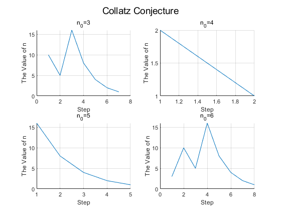

考拉兹猜想
考拉兹猜想
考拉兹猜想定义
考拉兹函数定义如下
$$ f(x)=\left\{ \begin{array}{**lr**} 3n+1&x为奇数且x\neq1\\ n/2&x为偶数\\ 1&x=1 \end{array} \right. $$ 通过对 x 取不同的值，发现最后都会收敛到 1。求该函数构成算法的上下界。
当然，下界是很容易求出来的，如果输入 n ，下降最快的也就是每次下降 $\frac{1}{2}$，这个下降速度对于的计算时间是 log n 。对于上界，用 MATLAB 带入一些数值计算。得到的结果如下：
部分 n0 的步长与 n 值变化



n0 与计算次数分布曲线